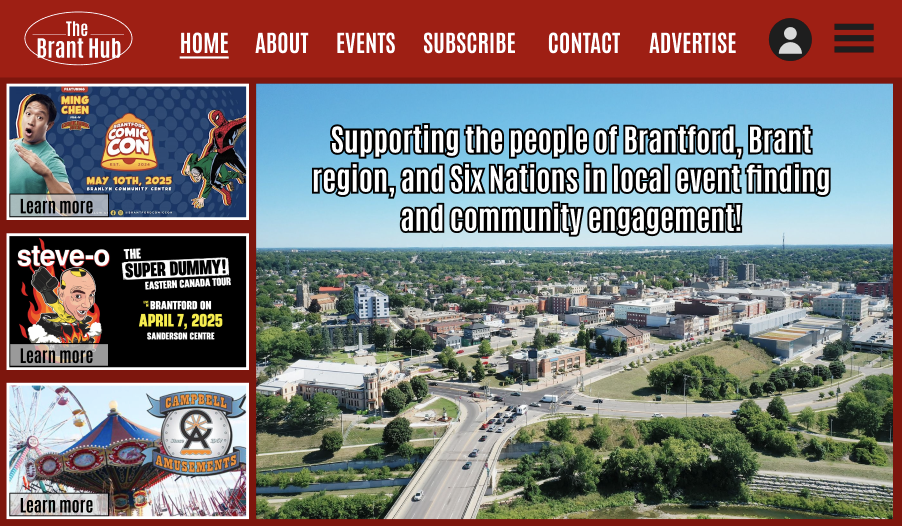
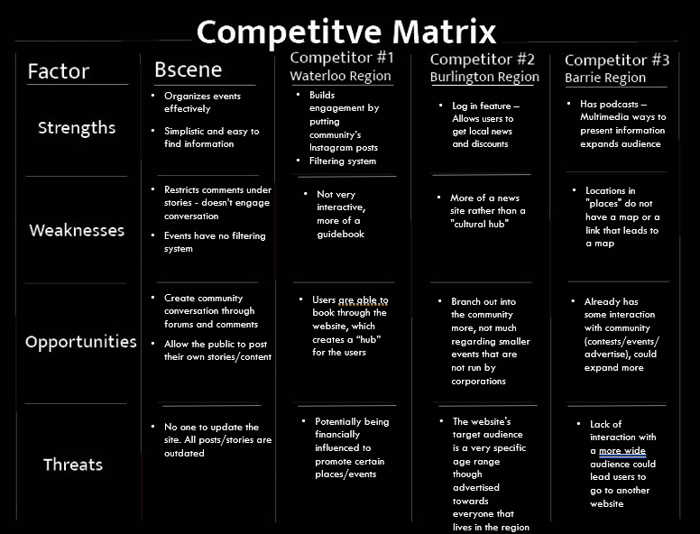
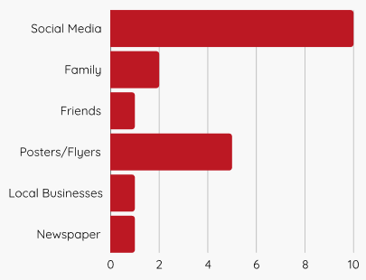
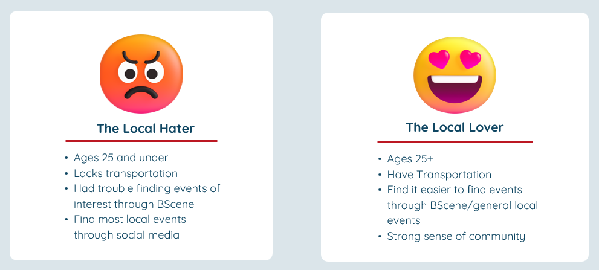

BScene website
A website re-design solution.

Project Overview
Project
The BScene website's owner and our client, Jason Freeze, wanted to improve the
website and get more traffic. Our other client, Wiktor Kulinski from Grand Culture also had similar goals. To get to the bottom
of the issue, we conducted interviews with the clients, user research and identified several pain
points in the current design. In our preliminary research, we found that the website felt outdated and difficult to navigate,
hard to implement monetization strategies, and the general users are older women who had little knowledge regarding submitting
content or using the website overall. Throughout this project, we worked closely with the clients to ensure that our project
met their needs and expectations. I contributed a key role to the research and design phases in this project, leading
a portion of the research and co-designing the final solution.
Target Population
- People new to the city (international students, Canadians moving to Brant Region, immigrants)
- Long-time residents interested in local events and activities
- Lifestyle enthusiasts
- Advertisers/content contributors/event planners
- Community of Brantford, Brant Region, and Six Nations
- Make the website more user friendly and intuitive to make it easier to discover new events and reduce difficulty when submitting your own as well as expand content to include job listings or volunteer opportunities.
- Make the website design more engaging and easier to navigate through an upbeat, modern, and content forward design that is concise.
- Integrate a dynamic, interactive map to help users find nearby events and give directions.
- Integrate features that work alongside the site such as notifications, content personalization, map feature and allowing users to follow topics to increase audience retention and create a "sticky" platform.
- Implement user accounts to save events and preferences.
- Allow users to connect, interact and share stories through a kind of forum on the site, creating a digital "community".
- Implement monetization features such as account memberships and sponsored posts to increase revenue potential.
- Ensure long term growth via incorporating automation features to make the website less labor-intensive.
- Increasing audience engagement through content personalization and advanced filtering.
- Increase visibility using search engine optimization (SEO) techniques.
- Client satisfaction with the solution.
- Increased visibility, reach, and interaction. Large active user base that engages with/posts content.
- Successful implementation of monetization features.
- Placemaking- BScene is "the place to go" for local events, news, discussions, etc.
- Long term sustainable growth.
- Successful implementation of audience retention features such as content personalization, interactive map, and notifiactions.
Ideation & Research
To first understand what the issues were with the current design, we conducted a competitive analysis of similar websites to see what features they had and how they were designed. We then conducted user research with Brantford locals to understand where they go to find out about local events, what they think of the current BScene website and newspaper, and what they would like to see in a new design. Using the research, we then created personas which helped us design the final solution with the target users in mind.
Competitive Analysis
To make this a fair comparison, we compared BScene against competitors who are based in Ontario, is a local community and entertainment guide, is publicly accessible, and are funded in comparable ways. We decided to look at these three similar websites:
Based on our research, we found that:- Community engagement needs to be consistent and prevalent for all types of users.
- There should be more ways for users to interact with the website (such as podcats, log in feature, submit their own opinion, being able to comment, etc.). This can lead to meaningful community engagement.
- The website should be constantly updated and maintained.
- The website should focus on representing a diverse culture through events and stories.
User Research
The main questions we wanted to answer through our user research were:- How do people find events?
- What do people feel about the community?
- What do people think about BScene?
- What are transportation issues, if any?
- We interviewed them about Brantford and its culture.
- We gave them both the BScene newspaper and website to conduct contextual inquiries.
Research Results
First, we had to find out how people find events.

We found that out of 20 people, 10 people find events through social media, 5 through posters or flyers, 2 through family, and 1 each for friends, local businesses, and newspaper. This shows that social media is the most popular way to find events, and the newspaper is the least popular-- BScene was never brought up.Then, we asked about how they felt about the community:
- General Reputation: Multicultural city, sporting activities, homeless population, nice quiet small city.
- Limited Activities: Many people feel that there are limited activities for different age groups and interests in the city.
- Difficult to "fit in": People who did not grow up in Brantford feel as though it is difficult to "fit in", or feel entirely disconnected.
- Compared to other cities: Not much positive personality in the city compared to other cities.
Then, we asked about their thoughts on BScene:
- Bscene was unknown to a lot of people.
- The marketing and format (newspaper, website) felt like it was outdated, especially to young audiences.
- Newspaper had too many ads, information regarding events are too vague and cluttered.
- Website has poor navigation and event discovery features, lack incentive to check.
- Social media is inactive or catered only to a specific demographic.
- A portion of the participants had cars, so they had no issues.
- Public transportation is confusing for those who are not familiar with it.
- People who don't live in Brantford have no incentive to stay due to parking issues, schedule clash, and confusion with public transportation.
User Personas
Using the data collected, we came up with two personas:
Using these personas and the research data, we were able to come up with some pain points and opportunities for the new design, as well as functional requirements for the final solution:Pain Points
- Limited awareness of events
- BScene's low engagement
- Event discovery issues
- Brantford's mixed reputation
- Disconnected commuter students
- Historic buildings neglected
- Transportation challenges
- Community engagement
- Event accessibility
- Brantford's reputation
- Improving BScene
- Transportation soltions
- Event Discovery: Filtering system, clear descriptions, and calendar integration.
- User Engagement: Social media strategy, email updates, and event submissions.
- Usability: Clean, mobile-friendly design with easy navigation.
- Community Growth: Highlight Brantford's strengths and support local initiatives.
- Transportation: Real-time transit info, parking guidance, and commuter-friendly solutions.
Implementation
Final Solution
With the design, users can:
- Navigate events that have been posted
- Filtering options
- Calendar view & day view
- Submit events
- Make events easily findable using keywords
- Integrate a preview of event before posting
Usability Testing
Using the final solution, we conducted a usability test with 10 users to gather feedback and identify any issues with the design. 5 of the participants were tasked to post an event, and the other 5 were tasked to find an event. These were our findings:Event posting
- Users thought the design was simple and easy to navigate.
- Users felt as though the website guides them through the posting process.
- One user suggested a feature to show police presence/safety measures on an event posting.
- Enjoyed the addition of an event preview feature.
- Users believed the design was very straightforward.
- Multiple users expressed interest in the amount of filtering options.
- Recommended the utility of a notification feature.
Future Improvements
If we were to continue this project, we would consider implementing the following improvements:
- Share event on social media, notification feature
- Log in feature (save events, edit posted events, share opinions/comments)
- More ads on the website
- More incentives to subscribe
- Visibility (social media presence, SEO)
- Colour adjustments and customization
- Display the distance between the event location and the user's location
- Integrate a map feature to provide directions to the event